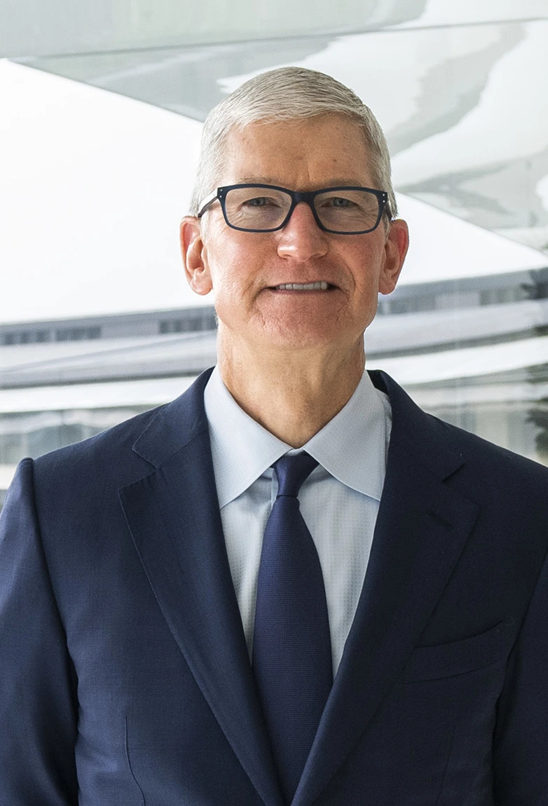

GERENTE GENERAL APPLE
Timothy Donald Cook (Mobile, Alabama, 1 de noviembre de 1960), más conocido como Tim Cook, es un empresario, ingeniero e informático estadounidense. Es conocido por haber sido el gerente general de Apple, que luego ejerció como director ejecutivo en reemplazo a Steve Jobs tras su muerte en 2011. Cook se unió a Apple en marzo de 1998 como vicepresidente de Operaciones Globales, ascendido posteriormente a vicepresidente de Ventas Globales y Operaciones, y finalmente, ejerció como gerente general de Apple. Fungió como el Director ejecutivo interino de la compañía entre 2010 y 2011, en reemplazo de Steve Jobs, que se encontraba en tratamiento médico. Finalmente, en agosto de 2011, fue nombrado como director ejecutivo de Apple por el Consejo de Administración de la compañía. Bajo su mandato, Apple ha pivotádo hacia un modelo de negocio basado en el respeto con el medio ambiente y la ciberseguridad. En 9 años, Cook ha doblado los ingresos y beneficios de Apple, así como incrementado su valor de mercado desde 358 billones de euros hasta los actuales 1.9 trillones. Cook es consejero ejecutivo independiente de Nike, de la 'National Football Foundation' y de la Universidad de Duke. En 2014, Cook se convirtió en el primer CEO de una empresa del índice Fortune 500 en declararse públicamente como homosexual. Es conocido por sus obras filantrópicas, en las que se ha comprometido a donar la totalidad de su fortuna (cercana a los mil millones de euros) a caridad.
ÚLTIMAS NOTICIAS
Apple, Inc. es una empresa estadounidense que diseña y produce equipos electrónicos, software y servicios en línea. Tiene su sede principal en el Apple Park, en Cupertino (California, Estados Unidos) y la sede europea en la ciudad de Cork (Irlanda). Sus productos de hardware incluyen el teléfono inteligente iPhone, la tableta iPad, la computadora personal Mac, el reproductor de medios portátil iPod, el reloj inteligente Apple Watch y el reproductor de medios digitales Apple TV. Entre el software de Apple se encuentran los sistemas operativos iOS, iPadOS, macOS, watchOS y tvOS, el explorador de contenido multimedia iTunes, la suite iWork (software de productividad), Final Cut Pro X (una suite de edición de vídeo profesional), Logic Pro (software para edición de audio en pistas de audio), Xsan (software para el intercambio de datos entre servidores) y el navegador web Safari. La empresa operaba, en mayo de 2014, más de 408 tiendas propias en nueve países, miles de distribuidores (destacándose los distribuidores prémium o Apple Premium Resellers) y una tienda en línea (disponible en varios países) donde se venden sus productos y se presta asistencia técnica. De acuerdo con la revista Fortune, Apple fue la empresa más llamativa en el mundo entre 2008 y 2012. En 2015, se convirtió en la empresa más valiosa del mundo según el índice BrandZ al alcanzar los 247 000 millones de euros de valor. El 3 de agosto de 2018, según The Wall Street Journal, la compañía se convirtió en la primera empresa en lograr una capitalización de mercado de 2 billón (mil millardos) de dólares. en el 2020, su valor se estimaba en unos 2,500 billones de dólares y al 3 de enero de 2022, rebasaba la cifra de los 3 billones de dólares. Las dos primeras tiendas Apple Inc abrieron en los Estados Unidos en 2001. En 2003, amplió su red en Japón, con la apertura de la primera tienda fuera de los EE.UU. Esto fue seguido por la apertura de tiendas en el: Reino Unido, Bélgica, Canadá, Dinamarca, Italia, Singapur, Alemania, Suecia, Francia, Países Bajos, España, Suiza, Mexico, Austria, Turquía; Polonia, y República de China. En Iberoamérica cuenta con tiendas en: Australia, Argentina, Brasil, y en Oriente Medio cuenta con presencia en los Emiratos Árabes Unidos. Apple también ha lanzado nuevos AirPods, una nueva generación de iPhones, iPads mejorados, nuevos MacBooks y varios Apple Watch nuevos. Pero podría haber mucho más planeado para 2022. Estos son todos los productos que ya han sido anunciados este año: iPhone SE (3ª generación). El dispositivo iPhone ha sido un producto clave para la compañía al generar millones de ventas y altos niveles de ingresos, especialmente en América, Europa y China. Actualmente sigue generando entre el 40% y el 60% de las ventas totales de la compañía.